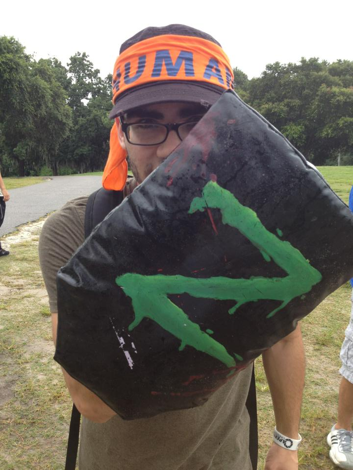

Humans vs Zombies

Humans vs. Zombies is a game that was created at Goucher College in 2005 by Chris Weed and Brad Sappington. The game quickly became famous due to the players telling their friends back home via Facebook. Currently, HvZ is played at over 650 colleges and universities around the world.
Gators Humans vs. Zombies was started in the fall semester of 2009 by Jesse Schmitt. The first official HvZ game at University of Florida was in the early spring of 2010 with well over 1,000 players registered to play. I joined GHvZ in the summer of 2010, and upon joining I immediately got to work on creating and recruiting for the first summer HvZ game on campus. The game lasted for four days and had around 200 players. In the spring of 2011, I became a full-time moderator for the club, and in the following summer I became vice president for the 2011-2012 school year. At the end of the 2013 spring semester, I decided to leave my position on the moderator team so I could enjoy the game during my senior year as a player and not a moderator.
Being a player and moderator in GHvZ has taught me a lot of things. I've learned how to get around campus, use critical thinking skills to figure out where objectives could be and work with people to achieve a common goal. GHvZ has also taught me the value of friendship (it sounds cheesy, I know). Almost all of the friends I made in college were because of HvZ; the people I consider my best friends right now are because I met them in HvZ. Humans vs. Zombies has given me a group of friends that I know I can rely on for anything, whether it's for life advice or just going to shoot some zeds during the game.